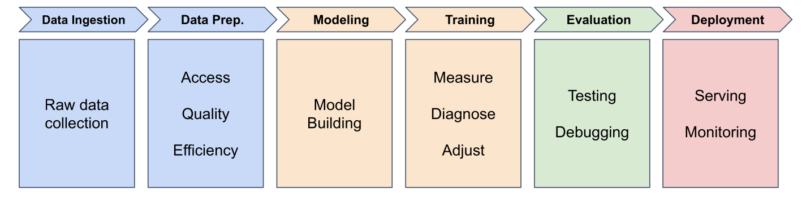

The Machine Learning Pipeline
Six stages from data to deployed model

The Machine Learning Pipeline
Stage 1: Data Ingestion
Gathering and organizing raw data
- Delivery records from company database
- Messy data: inconsistent formats, missing values, errors
- Organize for PyTorch to work efficiently
Stage 2: Data Preparation
Cleaning, transforming, and organizing
- Fix errors (impossible times, duplicates)
- Handle missing values
- Engineer features (addresses → distances)
Most time-consuming stage in real projects
Stage 3: Model Building
Designing the architecture
- How many neurons?
- How are they connected?
- What types of layers?
For delivery predictor: one neuron (simplest architecture)
Stage 4: Training
Teaching the model to make predictions
- Feed examples (8.2 miles → 22 minutes)
- Measure prediction errors
- Adjust parameters to improve
- Repeat for many epochs
Stage 5: Evaluation
Testing on unseen data
- Use test set (held back during training)
- Measure performance (accuracy, error)
- Detect issues and debug
Key question: Does your model work well enough to trust it?
Stage 6: Deployment
Getting your model into the real world
(We’ll cover this later in the course)
Building Your First Neural Network
Let’s see it in PyTorch code
Imports
import torch
import torch.nn as nn
import torch.optim as optim
torch: core functionalitynn: neural network componentsoptim: training tools
Preparing Data
distances = torch.tensor([[5.0], [6.0], [8.0], [10.0]],
dtype=torch.float32)
times = torch.tensor([[22.2], [25.6], [31.2], [38.5]],
dtype=torch.float32)
Tensors: optimized containers for neural network math
Understanding Tensor Shapes
distances = torch.tensor([[5.0], [6.0], [8.0], [10.0]])
distances.shape # torch.Size([4, 1])
- First dimension: batch size (4 samples)
- Second dimension: features per sample (1 feature)
Tensor Dimensions: 3 dimensions

How to read brackets as dimensions
Creating the Model
model = nn.Sequential(
nn.Linear(1, 1) # 1 input, 1 output
)
Sequential: container that passes data through layers in order
Linear layer: single neuron (weight × input + bias)
Loss Function
loss_function = nn.MSELoss()
Mean Squared Error: measures how wrong predictions are
- Bigger errors → bigger loss
- Perfect predictions → loss = 0
Optimizer
optimizer = optim.SGD(model.parameters(), lr=0.01)
SGD (Stochastic Gradient Descent):
- Figures out which direction to adjust weights/bias
lr (learning rate): controls step size
The Training Loop
for epoch in range(500):
optimizer.zero_grad() # Clear old calculations
outputs = model(distances) # Make predictions
loss = loss_function(outputs, times) # Measure error
loss.backward() # Calculate gradients
optimizer.step() # Update weights/bias

Each epoch: one full pass through training data
Training Loop Breakdown

outputs = model(distances) - Model uses distance as input
loss = loss_function(outputs, times) - Compares predictions to real times
loss.backward() - Figures out how to adjust weight/bias (backpropagation)
optimizer.step() - Makes the adjustments
Making Predictions (Inference)
with torch.no_grad():
new_distance = torch.tensor([[7.0]])
prediction = model(new_distance)
print(prediction)
torch.no_grad(): skip training overhead for faster inference
Lab 1: Building a Simple Neural Network
“What I hear, I forget. What I see, I remember. What I do, I understand.”
START WITH LAB 1
What’s Next?
In Session 3: Activation Functions we learn:
- Why linear models fail for complex patterns
- Introducing non-linearity with activation functions
- ReLU and other activation functions